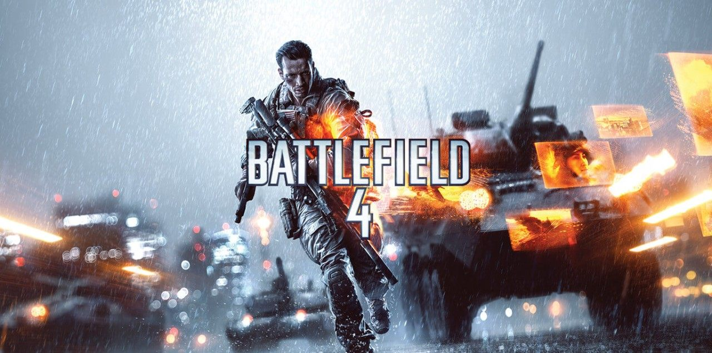
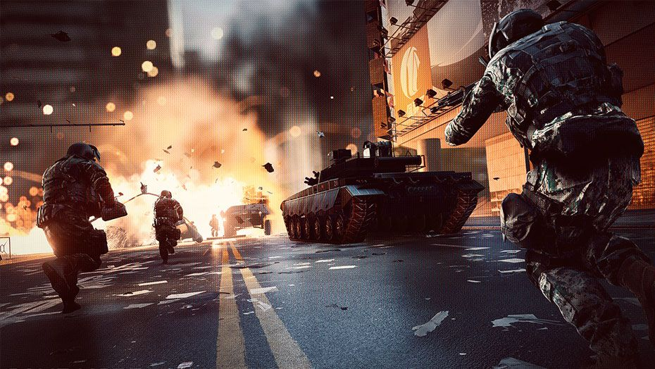

BATTLEFIELD 4
 Welcome to Battlefield 4 is an impressive first person shooting game. This game was developed by EA DICE for Microsoft Windows and publish under the banner of Electronic Arts. It was release on 20 October 2013. Amazing features have been loaded in this game. You may also like to download Napoleon Total War.  This games gameplay is with no doubt one of the best as it has both lit graphics and an intriguing storyline. Now we are presenting the world best first person shooting game and it is very easy to play with many features from the previous installment. In this game multi players Mode, single players Mode, campaign Mode, modification and additions as well as are included. It is also ability to in this for the color blind people that they can change the on screen indicators and dual-scoped weapons are also available that divide into automatic and semi-automatic fire. The stunning graphic make this game more beautiful and gorgeous. The downloading method is quite simple. All in all this game is very interesting and you will surely feel pleasure after to play.You can also download Star Wars Empire At War.Features of Battlefield 4
Following are the main features of Battlefield 4 Download Free that you will be able to experience after the first install on your operating System.- It’s an impressive game for game lovers.
- First person shooting game.
- Amazing game play.
- Can play in single, multi players and Compaign mode.
- Color blind people can change the on screen indicators.
- Dual-scoped weapons are include.
- Weapons are divided into automatic and semi-automatic fire.
- The downloading is very simple and unique.
- Impressive graphic to make game more gorgeous.
- Give a realistic feel after to play.
System Requirement Of Battlefield 4
Before you start Battlefield 4 Download Free make sure your PC meets minimums system requirements.- Operating System: Window Vista/7/8
- CPU: Intel Core 2 Duo or later
- RAM: 4 GB
- Setup Size: 18.2GB
- Hard Disk Space: 30 GB
RATING